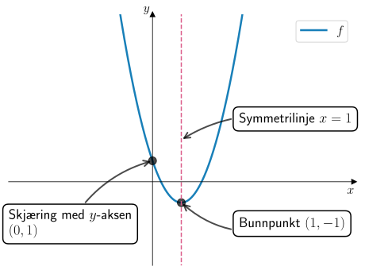
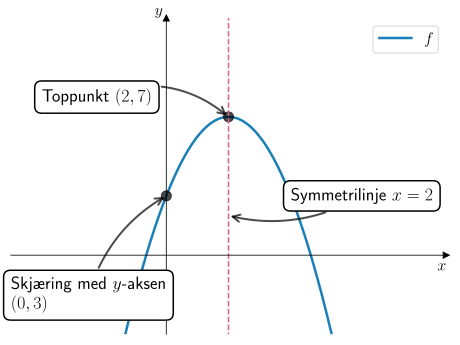
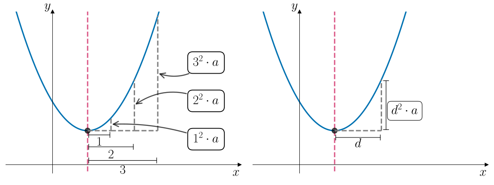
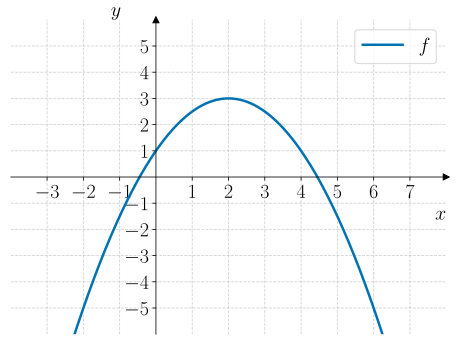
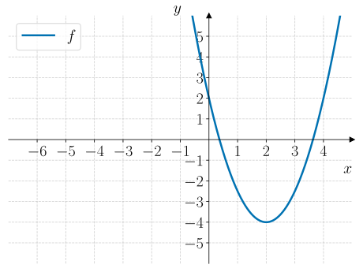
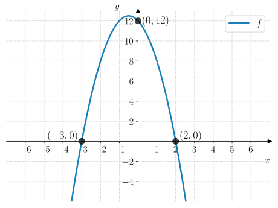

12. Standardform#
Kunne representere en andregradsfunksjon på standardform, og kunne lese av koeffisientene.
Kunne avgjøre den grafiske formen til en andregradsfunksjon ut fra koeffisientene.
Kunne bestemme koeffisientene til en andregradsfunksjon ved hjelp av lineære likningssystemer.
Akkurat som når vi jobbet med lineære funksjoner, så kan vi representere en andregradsfunksjon på flere måter som gir oss ulike opplysninger om grafen til funksjonen. Her skal vi se på det vi kaller for standardform. Standardformen gir oss informasjon om hvilken vei grafen til funksjonen vender, hvor den skjærer \(y\)-aksen og hvor symmetrilinja til grafen er. Det er det neste vi skal se nærmere på.
Standardform#
En andregradsfunksjon \(f\) kan representeres algebraisk på standardform ved:

Grafen til \(f\) kan da representeres slik:

Grafen til \(f\) vil ha form som en parabel der koeffisientene har følgende betydning på grafens form:
Hvis \(a > 0\), så er grafen konveks
 (grafen smiler og har et bunnpunkt). Hvis \(a < 0\), så er grafen konkav
(grafen smiler og har et bunnpunkt). Hvis \(a < 0\), så er grafen konkav  (surt fjes og har et toppunkt).
(surt fjes og har et toppunkt).Verdien til \(a\) er gitt ved hvor mye \(y\)-verdien endrer seg når vi går én enhet langs \(x\)-aksen vekk fra ekstremalpunktet.
Grafen har en symmetrilinje gitt ved \(x = -\dfrac{b}{2a}\)
Grafen skjærer \(y\)-aksen i punktet \((0, c)\)
Fra graf til \(f(x)\)#
Når vi har grafen til \(f\), kan vi bestemme \(f(x)\) ved å lese av verdiene til koeffisientene \(a\), \(b\) og \(c\).
La oss se på et eksempel:
Eksempel 1#
Grafen til en andregradsfunksjon \(f\) er vist i figuren nedenfor.
Bestem \(f(x)\).
Standardformen til \(f(x)\) er gitt ved
- Koeffisient \(a\)
Vi ser at grafen til \(f\) har et bunnpunkt i \((-1, -9)\). Går vi én enhet langs \(x\)-aksen til høyre finner vi grafen i \((0, -8)\) som betyr at \(y\)-verdien har økt med \(1\). Da får vi at \(a = 1\).
- Koeffisient \(b\)
Symmetrilinja til grafen til \(f\) er \(x = -1\) som betyr at
\[ x = -\dfrac{b}{2a} \liff -1 = -\dfrac{b}{2 \cdot 1} \liff b = 2. \]- Koeffisient \(c\)
Vi ser at grafen til \(f\) skjærer \(y\)-aksen i \((0, -8)\) som betyr at \(c = -8\).
- Funksjonsuttrykket \(f(x)\):
Nå vet vi at koeffisientene til \(f(x)\) er gitt ved
\[ a = 1 \and b = 2 \and c = -8 \]Dermed er
\[ f(x) = ax^2 + bx + c = x^2 + 2x - 8 \]
Underveisoppgave 1#
Grafen til en andregradsfunksjon \(f\) er vist i figuren nedenfor.
Bestem \(f(x)\).
Vi skriver \(f(x)\) på standardform:
- Koeffisient \(a\)
Vi ser at grafen til \(f\) har et toppunkt i \((2, 5)\). Går vi én enhet langs \(x\)-aksen mot høyre, finner vi grafen i punktet \((3, 4)\). Vi ser at \(y\)-verdien synker med \(-1\) som betyr at \(a = -1\).
- Koeffisient \(b\)
Symmetrilinja til grafen til \(f\) er \(x = 2\) som betyr at
\[ x = -\dfrac{b}{2a} \liff 2 = -\dfrac{b}{2 \cdot (-1)} \liff b = 4. \]- Koeffisient \(c\)
Vi ser at grafen til \(f\) skjærer \(y\)-aksen i \((0, 1)\) som betyr at \(c = 1\).
- Funksjonsuttrykket \(f(x)\):
Nå vet vi at koeffisientene til \(f(x)\) er
\[ a = -1 \and b = 4 \and c = 1 \]Dermed er
\[ f(x) = -x^2 + 4x + 1. \]
Fra \(f(x)\) til graf#
La oss se på et eksempel der vi regner ut de ulike egenskapene og sammenlikner med grafen.
Eksempel 2#
En andregradsfunksjon \(f\) er gitt ved
Bestem følgende egenskaper til grafen til \(f\):
Grafens form (konveks eller konkav)
Symmetrilinje
Koordinatene til topp- eller bunnpunktet
Skjæringspunktet med \(y\)-aksen
Lag en skisse av grafen til \(f\).
Koeffisientene til \(f(x)\) er \(a = 2\) og \(b = -4\) og \(c = 1\).
- Grafens form
Grafen er konveks
(den smiler) fordi \(a > 0\).- Symmetrilinje
Symmetrilinja til \(f\) er gitt ved \(x = \dfrac{-b}{2a} = \dfrac{-(-4)}{2 \cdot 2} = \dfrac{4}{4} = 1\).
- Bunn- eller toppunkt
Siden grafen er konveks, så har grafen et bunnpunkt. Bunnpunktets \(x\)-koordinat er det samme som symmetrilinja, altså \(x = 1\). For å finne \(y\)-koordinaten til bunnpunktet, setter vi \(x = 1\) inn i funksjonen:
\[ f(1) = 2 \cdot 1^2 - 4 \cdot 1 + 1 = 2 - 4 + 1 = -1 \]Dermed er bunnpunktet \((1, -1)\).
- Skjæringspunkt med \(y\)-aksen
Skjæringspunktet med \(y\)-aksen er \((0, c) = (0, 1)\).
Nå har vi nok opplysninger til å tegne en skisse av grafen til \(f\):
{kind=link}

Underveisoppgave 2#
En andregradsfunksjon \(f\) er gitt ved
Bestem følgende egenskaper til grafen til \(f\):
Grafens form (konveks eller konkav)
Symmetrilinje
Koordinatene til topp- eller bunnpunktet
Skjæringspunktet med \(y\)-aksen
Lag en skisse av grafen til \(f\).
Koeffisientene til \(f(x)\) er \(a = -1\), \(b = 4\) og \(c = 3\).
- Grafens form
Grafen er konkav
(surt fjes) fordi \(a < 0\).- Symmetrilinje
Symmetrilinja til \(f\) er gitt ved
\[ x = \dfrac{-b}{2a} = \dfrac{-4}{2 \cdot (-1)} = \dfrac{-4}{-2} = 2. \]- Topp- eller bunnpunkt
Siden grafen er konkav, så har grafen et toppunkt. Toppunktets \(x\)-koordinat er det samme som symmetrilinja, altså \(x = 2\). For å finne \(y\)-koordinaten til toppunktet, setter vi \(x = 2\) inn i funksjonen:
\[ f(2) = -2^2 + 4 \cdot 2 + 3 = -4 + 8 + 3 = 7. \]Dermed er toppunktet \((2, 7)\).
- Skjæringspunkt med \(y\)-aksen
Siden \(c = 3\), så er skjæringspunktet med \(y\)-aksen \((0, 3)\).
Nå har vi nok opplysninger til å tegne en skisse av grafen til \(f\):
{kind=link}

Fra graf til \(f(x)\) – igjen#
Det er ikke alltid like lett å lese av verdien til \(a\), spesielt hvis vi ikke kan se hvor mye \(y\)-verdien endrer seg når vi øker \(x\) med \(1\) enhet fra symmetrilinja. Da kan vi få bruk for følgende sammenheng:
Grafisk betydning av \(a\) (ledende koeffisient)#
Når vi øker \(x\) med \(d\) enheter fra symmetrilinja, så endrer \(y\)-verdien seg med \(d^2 \cdot a\) enheter.
Se figuren nedenfor.
{kind=link}

Det er ikke alltid vi kan lese av verdien til \(a\) direkte. Det gjør at vi heller ikke enkelt kan bestemme verdien til \(b\) siden de to koeffisientene er bundet sammen ved likningen for symmetrilinja. Da kan vi sette opp en likning ut ifra et punkt på grafen til \(f\) og bestemme verdien til \(a\) og deretter bestemme verdien til \(b\).
La oss se på et eksempel:
Eksempel 3#
I figuren nedenfor vises grafen til en andregradsfunksjon \(f\).
Bestem \(f(x)\).
{kind=link}

Vi skriver \(f(x)\) på standardform:
- Koeffisient \(a\)
Vi ser at toppunktet til grafen er i \((2, 3)\). Flytter vi oss \(2\) enheter til høyre så finner vi grafen i \((4, 1)\). Så her har \(y\)-verdien endret seg med \(-2\) enheter. Men \(y\)-verdien skal også ha endret seg \(2^2 \cdot a\) enheter, som betyr at vi får likningen
\[ 2^2 a = -2 \liff 4a = -2 \liff a = -\dfrac{1}{2} \]- Koeffisient \(b\)
Grafen til \(f\) har toppunkt i \((2, 3)\). Det er \(x\)-koordinaten til dette punktet som gir symmetrilinja som er \(x = 2\). Da kan vi bestemme \(b\):
- Koeffisient \(c\)
Vi ser at grafen til \(f\) skjærer \(y\)-aksen i \((0, 1)\) som betyr at \(c = 1\).
- Funksjonsuttrykket \(f(x)\)
Nå har vi funnet at koeffisientene til \(f(x)\) er
\[ a = -\dfrac{1}{2} \and b = -2 \and c = 1 \]Dermed er
\[ f(x) = -\dfrac{1}{2}x^2 - 2x + 1 \]
Underveisoppgave 3#
Grafen til en andregradsfunksjon \(f\) er vist i figuren nedenfor.
Bestem \(f(x)\).
{kind=link}

Vi skriver \(f(x)\) på standardform:
- Koeffisient \(a\)
Vi ser at bunnpunktet til grafen er i \((2, -4)\). Hvis vi øker \(x\) med \(2\) enheter til høyre, så finner vi grafen i \((4, 2)\). Da har \(y\)-verdien økt med \(6\) enheter. Vi vet også at siden vi har økt \(x\) med \(2\), så skal \(y\)-verdien ha økt med \(2^2 \cdot a = 4a\) enheter. Da får vi likningen
- Koeffisient \(b\)
Symmetrilinja til grafen til \(f\) er \(x = 2\) siden dette er \(x\)-koordinaten til bunnpunktet. Da kan vi bestemme \(b\):
- Koeffisient \(c\)
Vi ser at grafen til \(f\) skjærer \(y\)-aksen i \((0, 2)\) som betyr at \(c = 2\).
- Funksjonsuttrykk \(f(x)\)
Vi har funnet at koeffisientene til \(f(x)\) er
\[ a = \dfrac{3}{2} \and b = -6 \and c = 2 \]Dermed er
\[ f(x) = \dfrac{3}{2}x^2 - 6x + 2 \]
Bestemme \(f(x)\) med CAS#
En annen måte å finne \(f(x)\) på er å sette opp et likningssystem for koeffisientene \(a\), \(b\) og \(c\) som vi løser med CAS. Dette er spesielt nyttig i situasjoner hvor vi verken kan lese av symmetrilinje eller skjæring med \(y\)-aksen. Det skal du se nærmere på i Utforsk 1.
Utforsk 1#
Nedenfor vises grafen til en andregradsfunksjon \(f\). Grafen går gjennom punktene \((-3, 0)\), \((2, 0)\) og \((0, 12)\).
{kind=link}

Fig. 12.1 viser grafen til \(f\). Spesielt kan vi merke oss at grafen går gjennom punktene \((-3, 0)\), \((2, 0)\) og \((0, 12)\).#
Nedenfor vises en gif som viser hvordan vi kan bruke CAS til å finne \(f(x)\) ut ifra punktene som grafen går gjennom.

Bruk CAS til å bestemme koeffisientene til \(f(x) = ax^2 + bx + c\) slik som det vises i gif-en over.
Hva blir \(f(x)\)?
Grafen til en andregradsfunksjon \(g\) går gjennom punktene \((0, 4)\), \((1, 3)\) og \((2, 0)\).
Bestem \(g(x)\) med CAS.

Grafen til en andregradsfunksjon \(h\) går gjennom punktene \((0, 1)\), \((1, 0)\) og \((2, 3)\).
Bestem \(h(x)\) med CAS.